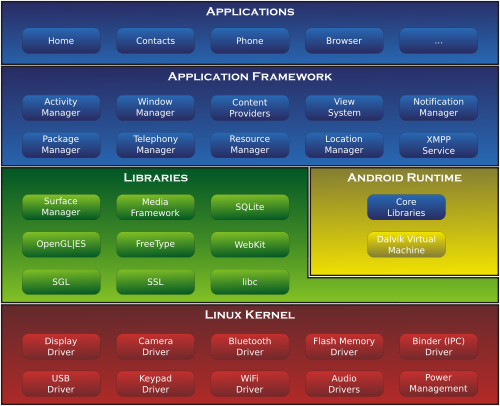

Imparare l'architettura, le API, e i tool di sviluppo su Android.
Acquisire pattern di programmazione adatti a dispositivi resource constrained in java.
Obiettivi
Materiale
- Codice <https://github.com/eliantor/Course2014Bari>
- Slide <http://eliantor.github.io/AndroidCourse>
- Riferimenti, libri, link contenuti video ecc
Prima lezione
Android OS Introduzione al framework
Mindset
Di cosa devo tener conto quando scrivo un'app android
- Intero sistema operativo a disposizione (Api potenti)
- Tutte le app sono create uguali
- App come servizi integrati
- Applicazioni event driven e context based (gps, sensori, touch,audio,camera)
- Varietà di scelta dei dispositivi
- Risorse limitate (memoria, batteria, banda)
- Use cases complessi, le app non hanno un main
- Callback hell
- Frammentazione del mercato
Architettura
- Linux (Experimental branch start merge mainline 3.8)
- Binder IPC (driver al cuore del funzionamento di android)
- Dalvik (vm a registri che esegue dex bytecode)/ ART
- System Services (WindowManager, Audio, Networking, Telephony ...)
- SDK libs (le API a nostra disposizione)
- Java (versione 6/7)

Building blocks
intro
Un'app android é costituita da componenti attivi (lousely coupled) e da un insieme di risorse.
Questi pezzi disaccoppiati sono uniti insieme a runtime in un'unica Application (Context) da un file di configurazione manifest.
Una caratteristica fondamentale di Android é che un app puó attivare direttamente un componente di un'altra applicazione, inviando messaggi intent o richiamando specifiche uri. Il manifest specifica quali messaggi un componente é in grado di ricevere tramite specifici filtri.
Building blocks
components
App basics
Organizzazione
Organizzazione del codice in classico stile maven
- src/main/java (contiene il codice dell'applicazione)
- src/main/res (contiene le risorse dell'app)
- src/main/assets (file system interno readonly)
- src/main/AndroidManifest.xml (il manifest dell'app)
<manifest xmlns:android="http://schemas.android.com/apk/res/android"
package="corso.sample"
android:versionCode="1"
android:versionName="1.0" >
<uses-sdk
android:minSdkVersion="9"
android:targetSdkVersion="19"/>
<application
android:icon="@drawable/ic_launcher"
android:label="@string/app_name">
</application>
</manifest>
TOOLING
Gradle/AndroidStudio
- Risolve il problema ADT/ANT duality
- Funziona da riga di comando
- Semplifica il lavoro in team
- Permette automazione ed integrazione con IDE
Gradle
- Basato su groovy
- Rimpiazza ANT/MAVEN
- Gestisce le dipendeze come MAVEN
- Ha task customizzabili come ANT
- DSL per la generazione di build script (no XMLHELL)
- Bootstrap automatico del progetto
- Plugin based
Gradle Android Plugin
Feature interessanti
- Testing integrato in un unico proggetto
- Multiproject setup (piú app/librerie) nello stesso progetto
- Build type multipli debug/release/(your special case)
- Flavors free/paid/premium
Gradle Project
Sample build script
buildscript {
repositories {
mavenCentral()
}
dependencies {
classpath 'com.android.tools.build:gradle:0.9.1'
}
}
apply plugin: 'android'
repositories {
mavenCentral()
}
android {
compileSdkVersion 19
buildToolsVersion "19.0.3"
//...
}
dependencies {
compile 'com.android.support:support-v4:19.0.1'
}
Activity
Activity
intro
Un'activity rappresenta una schermata (di solito copre l'intera finestra) con cui l'utente puó interagire per realizzare un'azione.
- Pattern MVC
- Attivata da un'intent
- Ha un layout (vista), tipicamente associato tramite una risorsa xml
- Puó far partire altre activity
- Piú activity costituiscono un task
- Ciclo di vita gestito dal sistema
- Puó contenere fragments e loaders
Activity
lifecycle
- Un'activity puó essere distrutta dal sistema per recuperare memoria
- L'intero processo dell'applicazione puó essere terminato dopo onPause()
- Un'activity puó attraversare diverse volte i metodi tra onCreate() e onDestroy() nel suo ciclo di vita
- Dobbiamo preoccuparci di rilasciare le risorse durante i metodi di terminazione
- Attenzione ai memory leak! (vedremo esempi)
Activity
code
package com.corso.sample.activity;
import com.corso.sample.R;
import android.app.Activity;
public class ExampleActivity extends Activity {
@Override
public void onCreate(Bundle savedInstanceState) {
super.onCreate(savedInstanceState);
// The activity is being created.
setContentView(R.layout.my_layout);
}
}
<application>
<activity android:name=".activity.ExampleActivity"
android:label="@string/app_name"
android:icon="@drawable/ic_launcher">
<!-- ..... -->
</activity>
</application>
Activity
more code
<?xml version="1.0" encoding="utf-8"?>
<!-- res/layout/mylayout.xml -->
<LinearLayout xmlns:android="http://schemas.android.com/apk/res/android"
android:layout_width="match_parent"
android:layout_height="match_parent"
android:orientation="vertical">
<TextView
android:layout_width="wrap_content"
android:layout_height="wrap_content"
android:text="@string/hello"/>
</LinearLayout>
<resources>
<string name="app_name">Sample</string>
<string name="hello">Hello world!/string>
</resources>
CODE
Wiews
Gestire l'interfaccia
Dobbiamo poter recuperare le viste nel codice
<TextView
android:id="@+id/tv_hello"
android:layout_width="wrap_content"
android:layout_height="wrap_content"
android:text="@string/hello"/>
TextView mHello;
@Override
public void onCreate(Bundle savedInstanceState) {
super.onCreate(savedInstanceState);
setContentView(R.layout.my_layout);
mHelloOut = (TextView)findViewById(R.id.tv_hello);
}
Wiews
Gestire l'interfaccia
Alcune viste hanno associato un comportamento
View mInteractive;
@Override
public void onCreate(Bundle savedInstanceState) {
super.onCreate(savedInstanceState);
setContentView(R.layout.my_layout);
mInteractive = findViewById(R.id.btn);
mInteractive.setOnClickListener(new OnClickListener{
@Override
public void onClick(View v){
//do something
}
});
}
Wiews
Gestire l'interfaccia
Alcune viste contengono dati
//....
@Override
public void onCreate(Bundle savedInstanceState) {
//....
mInteractive = (EditText)findViewById(R.id.btn);
mReplaceButton.setOnClickListener(this);
}
@Override
public void onClick(View v){
if(v.getId()==mReplaceButton.getId()){
mSavedContent = replaceContent(mSavedContent);
}
}
//...
private String replaceContent(String content){
Editable content =mInteractive.getText();
mInteractive.setText(content);
return content.toString();
}
CODE
Activity
Mantenere lo stato
Il sistema operativo puó interrompere il nostro processo
- Per recuperare memoria o durante un cambio di configurazione (Es. rotazione dello schermo)
- Dobbiamo salvare lo stato in modo persistente, (il processo viene deallocato)
private final static String SAVED_KEY="SAVED_KEY";
@Override
public void onCreate(Bundle savedInstanceState) {
if(savedInstanceState!=null){
//activity restarted
mState = savedInstanceState.getBoolean(SAVED_KEY);
}else{
mState = initializeState();
}
}
@Override
protected void onRestoreInstanceState(Bundle savedInstanceState){/*or here after onStart()*/}
@Override
protected void onSaveInstanceState(Bundle outState){
outState.putBoolean(SAVED_KEY,mState)
}
Activity
Navigazione
- Creare link tra activity
- Delegare l'esecuzione di un task ad un'altra activity e riceverne il risultato
- Ricordiamo che la comunicazione avviene sempre tramite intent
Activity
Navigazione 2
Creare link tra activity
private void launch(boolean explicit){
final Intent intent;
if(explicit){
intent = new Intent(this,AnotherActivityInMyPackage.class);
}else{
intent = new Intent("an.explicit.action");
}
intent.setData(Uri.parse("mydata://somedata/1000"));
intent.putExtra("A_KEY",1000);
this.startActivity(intent);
}
Delegare l'esecuzione di un task
private final static int MY_REQUEST_CODE = 1;
//...
this.startActivityForResult(intent,MY_REQUEST_CODE);
Activity
Navigazione 3
Creare link tra activity
@Override
public void onCreate(Bundle savedInstanceState){
handle(getIntent());
}
@Override
protected void onNewIntent(Intent intent){
setIntent(intent); //Optionally
handle(intent);
}
private void handle(Intent intent){}
Delegare l'esecuzione di un task
setResult(RESULT_OK,new Intent().putExtra("content",response));
//data is optional
//setResult(int x); RESULT_OK RESULT_CANCELED RESULT_FIRS_USER
finish();
Activity
Navigazione 4
Ricevere il risultato
private final static int MY_REQUEST_CODE = 1;
//...
@Override
protected void onActivityResult (int requestCode, int resultCode, Intent data){
if(requestCode==MY_REQUEST_CODE){
if(resultCode==RESULT_OK){
//do something with data may be null
}else{
//do something when user refused to complete action
}
}else{
// not my business another request
}
}
CODE
Parte 2
UI
Risorse
Introduzione
- Android tiene separate strettamente le view dal controller
- Le viste sono definite come risorse (file xml)
- Testo e immagini sono in risorse separate
- Binding dinamico delle risorse a runtime
- La risoluzione della risorsa si basa sul matching tra qualificatori e configurazione del device
- Esempi di qualificatori
- Versione del SO
- Locale
- dimensione dello schermo
- orientamento dello schermo
Risorse
Values
- Risorse scalari il cui valore é determinato dinamicamente
- Definite nelle cartelle values-*
- Stringhe (utile per l'internazionalizzazione)
- Dimensioni definite in DP SP density independent pixels*
- Id costanti compile time univoche generate dal sistema
Risorse
Layout
- Risorse che definiscono le viste
- Vengono espanse a runtime in un albero di View (simile al DOM)
- I nodi interni sono ViewGroup (possono contenere altri nodi)
- I nodi foglia sono View (icone/bottoni/campi di testo)
- Alcune view sono collegate dinamicamente ai dati (liste/griglie/pager)
- Vediamo esempio di layout e gestione della compatibilitá tra schermi
CODE
AdapterViews
Gestire interfacce dinamiche
Alcune viste sono collegate a modelli complessi:
collection di un numero variabile di item, che a loro volta sono rappresentati da specifici insiemi di viste.
- Gestione e visualizzazione del modello globale
- Numero di item
- Accesso al singolo item
- Generazione della vista per lo specifico item
Serve un ulteriore livello di indirezione:
introduciamo gli Adapter.
AdapterViews
Code
public class MyAdapter extends BaseAdapter{
private final LayoutInflater mInflaterService;
//...
@Override
public View getView(int position,View convertView,View theList){
View v = mInflaterService.inflate(R.layout.item_layout,theList,false);
presentTheItem(getItem(position));
return v;
}
}
ListView lv = findViewById(R.id.list);
mAdapter = new MyAdapter((Context)this);
lv.setAdapter(adapter);
lv.setOnItemClickListener(/*the listener*/);
private void updateData(){
doUpdtateData();
mAdapter.notifyDataSetChanged();
}
AdapterViews
Note
- Gli item possono essere associati a viste diverse
- getView() viene chiamato per ogni item
- getView() espande un nuovo layout per ogni item
- spesso questa operazione é ridondante
- solo una piccola porzione degli item é visibile sullo schermo
- ViewHolder pattern o sottoclassi specifiche di Adapter
CODE
Parte 3
Fragments
Fragments
Introduzione
- Introdotti in android 3.0 per supportare i tablet
- Decompongono un'activity in sottocomponenti
- Facilitano il riutilizzo del codice
- NON sono componenti di Android nel senso classico ma classi di supporto del framework
- Possono essere usati su versioni piú vecchie tramite libreria statica di supporto
- Strumento duale rispetto al late-bindining delle risorse per la cross compatibily
Fragments
Introduzione 2

- Ciclo di vita piú complesso di quello di un'activity
- Un fragment puo' non avere un'interfaccia grafica associata
- Un fragment puo essere aggiunto e rimosso dinamicamente
- Solo da 1 versione un fragment puo' contenere altri fragment
Fragments
Code
public class MyFragment extends Fragment {
@Override
public View onCreateView(LayoutInflater inflater,ViewGroup container,Bundle savedInstanceState){
View v = inflater.inflate(R.layout.my_fragment,container,false);
// ... setup
return v;
}
@Override
public void onActivityCreated(Bundle savedInstanceState){
// ...
}
// ...
}
<!-- in the layout for the activity -->
<!-- .... -->
<fragment class="com.example.MyFragment"
android:id="@+id/MyFragmentId"
android:layout_width="match_parent"
android:layout_height="wrap_content"/>
Fragments
Code
public class MyActivity extends FragmentActivity{
@Override
public void onCreate(Bundle savedInstanceState){
setContentView(R.layout.my_activity);
//...
FragmentManager manager = getSupportFragmentManager();
MyFragment f = (MyFragment)manager.findFragmentById(R.id.MyFragmentId);
}
}
CODE
Fragment Dinamici
Introduzione
- I fragment possono non essere dichiarati staticamente nei layout
- In questo caso possono non avere una vista associata
// in the activity private final static String TRANSACTION_TAG = "A TAG"; //... MyFragment f = new MyFragment(); FragmentManager m = getSupportFragmentManager(); m.beginTransaction() .replace(R.id.viewgroup,f,TRANSACTION_TAG) .addToBackStack(null) .commit(); //.. m.findFragmentByTag(TRANSACTION_TAG);
Fragment
... non finisce qui
- I fragment si rivelano utili in molte situazioni, diverse da quelle per cui sono stati progettati.
- Possiamo separare il ciclo di vita da quello dell'activity
setRetainInstance(true);
- Utile per salvare stato dell'applicazione complesso Fragment Memory Card
- Utile supporto per la concorrenza: fa da bridge con altri thread.
CODE
Seconda lezione
Persistenza
Persistenza
Alternative
- File system
- Preferenze
- Database
Persistenza
File system
Internal private storage
String FILENAME = "myprivatefile"; FileInputStream in =context.openFileInput(FILENAME,Context.MODE_PRIVATE); //... FileOutputStream out = context.openFileOutput(FILENAME,Context.MODE_PRIVATE);Caching
File f =context.getCacheDir(); // i file possono essere rimossi dal sistemaExternal storage
// controllare se abbiamo un sd Environment.getExternalStorageState().equals(Environment.MEDIA_MOUNTED); // aprire la nostra root sull'sd esterna File f =Environment.getExternalFilesDir(); // /Android/data/mio.package/files/ File f =Environment.getExternalStoragePublicDirectory(DIRECTORY_MUSIC); //shared
Persistenza
Preferences
Specifiche per activity o globali (con nome)
Salvate come file xml nello storage interno
SharedPreferences localPrefs = activity.getPreferences();
SharedPreferences prefs = context.getSharedPreferences("PREFS_FILE",MODE_PRIVATE);
boolean myOptionalPref = context.getBoolean("onOffPreference",/*default*/false);
String myOptionalText = context.getString("textPreference",/*default*/"fallback");
//...
SharedPreferences.Editor editor = prefs.edit();
editor.putBoolean("key",false)
.putInt("intKey",69)
.commit():
Seconda lezione
Database
Database
SQLite
SQLite é un database embedded (nessuna connessione tramite jdbc) gira nel nostro stesso processo
Non ha tutte le funzionalitá di un database full fledged
Il db é un singolo file
Non é tipizzato: una colonna puó contenere qualsiasi tipo
Manca di alcune features importanti come gli outer join e i foreign constraints sono disabilitati di default
Pessima concorrenza
Nonostante tutto ottimo per applicazioni embedded
Database
SQLite
Creiamo un db tramite SQliteOpenHelper
public class TodoOpenHelper extends SqliteOpenHelper{
TodoOpenHelper(Context context){
super(context,DATABASE_FILE,/*CursorFactory*/null,DATABASE_INT_VERSION);
}
public void onCreate(SQLiteDatabase db) {
db.execSql(CREATE_TABLE_SQL);
}
public void onUpgrade(SQLiteDatabase db,int oldVersion,int newVersion) {
db.execSql(ALTER_TABLE_SQL);
}
//....
}
Database
Interazione
TodoHelper helper = ...;
SQLiteDatabase db =helper.getWritableDatabase();
ContentValues values = new ContentValues(); // riga da inserire
long newid=db.insert("table_name",null,values);
int numUpdates=db.update("table_name",null,values,"_id = ?",new String[]{"1"});
int numDeletes=db.delete("table_name","_id = ?",new String[]{"2"});
Cursor cursor =db.query("table_name",
new String[]{"_id","text"},"_id = ?",new String[]{"3"},
/*groupby*/null,/*having*/null,/*orderby*/null,/*limit*/null);
int count = cursor.getCount();
if(cursor.moveToFirst()){
String name = cursor.getString(cursor.getColumnIndexOrThrow("name"));
}
cursor.close();
Seconda lezione
Content Providers
ContentProviders
Introduzione
developers.android.com dice "you don't need content providers if you don't want to share content with other apps but..."
- Vi serve se volete implemetare facilmente search e suggerimenti
- Vi serve se volete implementare il drag & drop con le altre app
- Vi serve se volete sfruttare al meglio gli altri componenti del framework
- Vi serve se volete sincronizzare i dati in modo facile con la rete
- Vi serve se volete strutturare bene un app
Content Providers
Elementi essenziali
I content provider implementano un'architettura client/server
Client: ContentResolver <-> Server: ContentProvider
Un CP risponde ad una o piú AUTHORITY
Si comunica con un CP tramite uri nella forma content://authority/path
I CP possono implementare schemi complessi di permessi
API ottimizzata per dati tabulari (SQL) o file, ma nessun altro enforcement per il backend
Possono auto sincronizzarsi con la rete
Consentono di creare ui reattive
Content Providers
Api client side
// lato client stessa api di sqlite con in piú l'uri
ContentResolver resolver =context.getContentResolver();
Cursor cursor =resolver.query(uri,projection,selection,selectionArgs,null,null,null);
// o per l'apertura di file
InputStream input =resolve.openInputStream(uri);
// il content provider
public class TodoProvider extends ContentProvider{
public boolean onCreate(){}
public Cursor query(Uri uri,String[] projection,String selection,...);
public Uri insert(Uri uri,ContentValues values);
public int delete(Uri,...);
public int update(Uri uri,...);
public String getType(Uri uri);
public ParcelFileDescriptor openFile(Uri uri,String mode);
}
<!--nel manifest-->
<provider android:authorities="com.jdk.todo.provider"
android:readPermission="com.jdk.permissions.READ_TODO"
android:writePermission="com.jdk.permissions.WRITE_TODO">>
</provider>
CODE
Terza lezione
Concorrenza
Concorrenza
Necessaria...
- L'event loop principale deve essere libero da operazioni costose
- Le operazioni di I/O bloccano il thread su cui vengono eseguite
- In particolare l'accesso alla rete
- Android su questo é molto severo:
05-14 23:52:47.258: E/AndroidRuntime(21329): FATAL EXCEPTION: main 05-14 23:52:47.258: E/AndroidRuntime(21329): android.os.NetworkOnMainThreadException 05-14 23:52:47.258: E/AndroidRuntime(21329): at android.os.StrictMode$AndroidBlockGuardPolicy.onNetwork(StrictMode.java:1126) 05-14 23:52:47.258: E/AndroidRuntime(21329): at java.net.InetAddress.lookupHostByName(InetAddress.java:385) 05-14 23:52:47.258: E/AndroidRuntime(21329): at java.net.InetAddress.getAllByNameImpl(InetAddress.java:236) 05-14 23:52:47.258: E/AndroidRuntime(21329): at java.net.InetAddress.getAllByName(InetAddress.java:214) 05-14 23:52:47.258: E/AndroidRuntime(21329): at libcore.net.http.HttpConnection.<init>(HttpConnection.java:70) ....
Concorrenza
Concorrenza
Componenti essenziali
L'unitá di concorrenza in java é il Thread
Ogni thread esegue un path di esecuzione indipendente. In modo concorrente, (realmente concorrente se siamo su un multi core)
Un Thread é anche una radice per quanto concerne il garbage collector, la concorrenza é la causa dei memory leak
I thread hanno bisogno di comunicare tra loro e sincronizzarsi
Concorrenza
Threads
Uso diretto dei thread
- Completa gestione del multithreading
- Non gestiscono il ciclo di vita dei componenti android
- Non facilitano update della ui
Threads
Quando usarli
- Necessitiamo un controllo diretto e preciso del multithreading
- Conosciamo esattamente il comportamento della concorrenza nella nostra applicazione
- Sappiamo come sincronizzarli e metterli in comunicazione, (lock, semafori, mutex, atomic CAS)
...ad esempio...
Chiaro?
Concorrenza
... continua...
Threads e lock, anche se a volte necessari, sono strumenti di basso livello.
In particolare, non possiamo comunque bloccare il thread della ui, in attesa di un mutex
Ci servono altre primitive
atomic CAS
....ehr
Threads
Esempio
private TextView mTv;
protected void onCreate(Bundle savedInstanceState) {
//...
mTv = (TextView)findViewById(...);
new Thread(){
public void run() {
final String result = obtainStringFromBlockingSource();
// mTv.setText(result); -> Exception ui update from non Main Thread
runOnUiThread(new Runnable(){
public void run(){
mTv.setText(result);
}
})
}
}.start();
}
Threads
Problemi
Leak! Il thread (non statico) contiene un riferimento all'activity, il garbage collector non puó eliminarla. Rischio di OutOfMemory
mTv non é piú visibile dopo un cambio di configurazione
Strategia: bloccare il thread in onDestroy o onStop e riprendere il lavoro in onStart()
Minimizzare il rischio di thread non interruptible, ad esempio timeout, controllare InterruptedException
Minimizzare il rischio di memory leak, disaccoppiando l'activity dal thread: retained fragments
Ancora meglio:
Non usate i thread nelle activity a meno che non siate sicuri di quello che state facendo
sicuri
Soluzioni
AsyncTask
Facilita l'interazione con la ui
Sconsigliabile per operazioni di lunga durata.
Non gestisce il cilco di vita delle activity.
public class Task extends AsyncTask<Params,Progress,Result>{
protected void onPreExceute(){/* OPT sul thread della ui prima di essere avviato*/}
protected Result doInBackground(Params... params){
//REQ esegue il lavoro in background
publishProgress(Progress...); // invia risultati parziali al thread della ui
}
protected void onProgressUpdate(Progress... progress){
//OPT callback di publishProgress()
}
protected void onPostExecute(Result res){
//OPT riceve il valore di ritorno da doInBackground sulla ui
}
}
...continua
public AsyncTask execute(Params ... params); //avvia il task
public final boolean cancel(boolean interrupt); //aborts
public final boolean isCancelled(); // is aborted
public void onCancelled(){ } // callback di cancel
AsyncTask
Valutazione
- Meglio dei thread
- Leak ancora presenti
- Non usare inner classes non statiche
- Usare weak reference per aiutare il garbage collector
- Cancellare prima di onDestroy
- Disaccopiare dall'activity tramite retained Fragments
CODE
Concorrenza
L'engine di Async Task
Async Task sfrutta al suo interno tre componenti basilari di android
- Looper: l'astrazione di un ciclo while true associato ad un thread
- MessageQueue: coda di messaggi associata ad un looper
- Handler: gestori di messaggi associati al looper
- Sul main thread gira il looper principale
- Dei tre l'unico che si usa direttamente nel codice utente con una certa frequenza é l'handler
Concorrenza
Handler
private final static int ARG = 1;
private final static int EVENT_1 = 1;
public MyHandler extends Handler{
@Override
public void handleMessage(Message msg) {
switch(msg.what) {
case EVENT_1:
handleEvent(msg.obj,msg.arg1,msg.arg2);
break;
//...
}
}
}
MyHandler handler = new MyHandler();
//...
Message msg =handler.obtainMessage(EVENT_1,ARG,ARG,"ciao");
handler.sendMessage(msg);
handler.sendMessageDelayed(handler.obtainEmptyMessage(EVENT_1),1000);
handler.post(new Runnable(){/*code to execute*/})
handler.removeMessages(EVENT_1);
Concorrenza
Alternative
AsyncQueryHandler
Wrappa un contentResolver: le operazioni sono effettuate serialmente su un looper in background
private final static int QUERY_ID = 1;
private static class ContentHandler extends AsyncQueryHandler{
protected void onQueryComplete(int token,Object cookie,Cursor result){
// callback
}
}
ContentHandler h = new ContentHandler(getContentResolver());
h.startQuery(QUERY_ID,/*cookie*/null,uri,....);
Concorrenza
Alternative
HandlerThread un thread su cui gira un looper
public class MyLoopingThread extends HandlerThread{
public MyLoopingThread(){
super("name for debugging purposes");
}
@Override
protected void onLooperPrepared() {
// do some setup before start looping
}
public Handler createHandler(Handler.Callback callback){
return new Handler(getLooper(),callback);
}
}
Concorrenza
Loaders
I loader permettono di caricare dati in background in modo sicuro
- Effettuano un task in background (come async task)
- Restituiscono il risultato sul main thread (come async task)
- Continuano ad eseguire il task durante un cambio di configurazione (come async task)
- Ricordano il loro stato tra una configurazione e l'altra
- Possono monitorare una sorgente dati (CP) e notificare l'activity dei cambiamenti.
Concorrenza
Loaders Continua
- Presenti dall'api 11
- Usabili con la supprt library dall'api 4
- Non possono essere implementati come classi interne non statiche (policy enforced)
- due componenti
- Loader: che si occupa di fare il lavoro
- Loader.Callbacks: che vengono notificati dal loader quando l'operazione é conclusa
- Gestiti tramite LoaderManager
- Ci interessa in particolare il CursorLoader
Concorrenza
Loaders Continua
Gestire e creare i loader
private final static int ID = R.id.LOADER_ID;
//il loader manager avvia un loader identificato da un id se e solo se non
//ne esiste giá uno precedente (anche in una configurazione precedente)
getSupportLoaderManager().initLoader(ID,null,fCallbacks);
// fCallbacks viene notificato quando il risultato é realizzato
//kill currently running loader notify if already completed
getSupportLoaderManager().destroyLoader(ID);
// praticamente la somma dei due precedenti
getSupportLoaderManager().restartLoader(ID,null fCallbacks
Concorrenza
Loaders Callbacks
Implementare le callback necessarie nell'activity
LoaderManager.LoaderCallbacks<T> fCallbacks =
new LoaderManager.LoaderCallbacks<T>() {
public Loader<T> onCreateLoader(int id, Bundle args) {
/* create and return a loader for the id and arguments*/
/* cursor loader is the most used tipically we won't need to implement
a new one */
return new MyLoader(context);
}
public void onLoadFinished(Loader<T> loader, T data) {
/* use loaded data */
}
public void onLoaderReset(Loader<T> loader) {
/* loader has been reset clear data */
}
}
CODE
Concorrenza
Custom Loaders
Implementare un loader custom
public class MyLoader extends AsyncTaskLoader<T>{
private T mData;
public MyLoader(Context context) {
super(context);
}
// background work
@Override public T loadInBackground() {
T data = loadYourData();
return data;
}
}
Concorrenza
Custom Loaders
Implementare un loader custom
// delivers data to onLoadFinished
@Override public void deliverResult(T data) {
if(isReset()){
// another request overrides the current one
releaseYourData(data);
}
T old = mData; mData = data;
if(isStarted()) {
// currently active
super.deliverResult(mData);
}
releaseYourData(old);
}
@Override protected void onStartLoading() {
if(mData!=null) deliverResult(mData); // deliver current results;
// register watching T changes if possible (calling onContentChanged())
if(takeContentChanged()||mData==null) {
forceLoad();
}
}
Concorrenza
Custom Loaders
Implementare un loader custom
@Override protected void onStopLoading(){
cancelLoad();
}
@Override public void onCanceled(T data){
super.onCanceled(data);
releaseYourData(data);
}
@Override public void onReset(){
super.onReset();
onStopLoading();
releaseYourData(mData);
mData = null;
}
Quarta lezione
Services
Service
Lavorare in background
- Componente che lavora in background
- Usato per operazioni long running
- Non necessita dell'interazione dell'utente
- Modalita' fire and forget, Started
- Moadalita' client/server, Bound
- O entrambe!
- I servizi di android sono implementati tramite service
- Il codice viene comunque eseguito sul main thread!!
- Un service potrebbe essere spento dal sistema se gira per troppo tempo
Service
Ciclo di vita

- Molto piu' semplice del ciclo di vita dell'activity
- Apparentemente:
- Le due modalita' si possono usare insieme
Service
Modalita' started
- Il service viene avviato tramite intent
- L'intent iniziale e' l'unico canale di comunicazione col service
- Resta attivo fino a segnalazione esplicita
- Quando si stoppa il service viene immediatamente distrutto
- Piu' tempo resta attivo piu' aumenta la probabilita' che il sistema lo killi prematuramente
- Siamo noi a decidere in che modo reagire a questo evento
- Se facciamo partire piu' volte un servizio gia' attivo gli intent arrivano sempre allo stesso service
- Nota: onBind va sempre implementato!
Service
Basic implementation
<service android:name=".MyService">
<intent-filter>
<-- .... -->
</intent-filter>
</service>
public class MyService extends Service {
@Override public IBinder onBind(Intent intent){
return null; // metodo astratto che va sempre implementato
}
@Override public int onStartCommand(Intent intent,
int flags,int startId){
return START_NOT_STICKY; //start mode
}
}
Service
Basic implementation
// avviare un service
context.startService(new Intent(context,MyService.class));
// stoppare un service started
context.stopService(intent);
// o dall'interno del service stesso
stopSelf(int startId);
stopSelf();
stopSelfResult(int startId);
Service
Start mode/startFlag/ startId
- Start mode determina in che modo far ripartire un service se spento dal sistema
- START_NOT_STICKY il service non viene riavviato
- START_REDELIVERY_INTENT il service viene riavviato e l'ultimo intent viene ripresentato a startCommand
- START_STICKY il service viene riavviato ma l'intent non viene rimandato al service
- Start flag segnala la modalita' di avvio corrente
- 0 nulla da dichiarare avvio normale del service
- START_FLAG_RETRY il service e' riavviato perche' l'intent non e' stato processato
- START_FLAG_REDELIVERY_INTENT il service e' riavviato con l'intent precedentemente non gestito
- Start id e' l'identificativo univoco della chiamata a startService da usare per stoppare il servizio
CODE
Services
Modalita' bounded
- Modalita' client server
- Bisogna restituire un IBinder
- Per serivzi locali basta estendere Binder
- Per servizi usabili da remoto bisogna usare un Messenger o AIDL
Services
Modalita' bounded
private final ServiceConnection connection =
new ServiceConnection(){
public void onServiceConnected(ComponentName name,IBinder binder){
}
public void onServiceDisconnected(ComponentName name){}
};
//binding
bindService(intent,connection,/*flags*/Context.BIND_AUTO_CREATE);
Services Lifecycle

CODE
Services
IPC
- Android ci permette di mettere in comunicazione app diverse
- Ognuna gira in un proprio processo
- Non possiamo usare Binder in questa situazione
- LocalBinder non é definita nel classloader dell'app client
- Dobbiamo implementare Messenger o definer un'interfaccia AIDL
- AIDL é l'ultima risorsa a cui ricorrere quando nessuna delle altre soluzioni é sufficiente
Services
Messenger
public class OneMessengerService extends Service {
private static final int MESSAGE_REQUEST =1;
private static final int MESSAGE_RESULT = 2;
private static final int REALLY_IMPORTANT_ONE = 1;
private final Messenger messenger = new Messenger(new HandlerQueue());
private class HandlerQueue extends Handler{
@Override
public void handleMessage(Message msg) {
switch (msg.what){
case MESSAGE_REQUEST:
Message reply = Message.obtain(null, MESSAGE_RESULT, REALLY_IMPORTANT_ONE);
try {
Messenger remote =msg.replyTo;
remote.send(reply);
} catch (RemoteException e) {
//client disconnected
}
break;
}
}
}
@Override
public IBinder onBind(Intent intent) {
return messenger.getBinder();
}
}
Services
Messenger
public class OneClient extends Activity implements ServiceConnection{
private Messenger mService;
private final Messenger mReceiver = new Messenger(new ReceiveHandler());
@Override
public void onServiceConnected(ComponentName name, IBinder service) {
mService = new Messenger(service);
Message send = Message.obtain(null,MESSAGE_REQUEST);
send.replyTo=mReceiver;
try {
mService.send(send);
} catch (RemoteException e) {
// disconnected
}
}
@Override
public void onServiceDisconnected(ComponentName name) {
mService= null;
}
class ReceiveHandler extends Handler{
//...
}
}
Eventi
Broadcast receiver
Broadcast Receiver
Introduzione
- Componenti android che permettono di registrarsi ad eventi di sistema o applicativi
- Restano in ascolto anche quando l'app é spenta
- NON sono un context
- Temporanei: registrati da un'activity/service interessati ad un evento
- Possono essere registrati in modo permanente nel manifest
- Nota: per sicurezza l'app deve essere stata accesa almeno una volta prima che un receiver sia realmente attivo
- Allo scadere di un timeout (10 secondi) il receiver viene chiuso dal sistema
Broadcast Receiver
Receiver globali
<uses-permission android:name="android.permission.RECEIVE_BOOT_COMPLETED" />
<receiver android:name="BootReceiver" >
<intent-filter>
<action android:name="android.intent.action.BOOT_COMPLETED" />
</intent-filter>
</receiver>
public class BootReceiver extends BroadcastReceiver {
@Override
public void onReceive(Context context,Intent intent) {
if("android.intent.action.BOOT_COMPLETED".equals(intent.getAction())) {
context.startService(context,DoActualWorkService.class);
}
}
//alla fine di onreceive (o allo scadere del timeout) il sistema scarta il receiver
}
Broadcast Receiver
Receiver dinamici
- Registrare broadcast receiver appesantisce il sistema
- Gli eventi potrebbero essere interessanti solo in determinate condizioni
- Per questi use case usiamo i receiver dinamici
public class BroadcastActivty extends Activity { private static final String ACTION = "com.example.intent.BROADCAST"; private final static IntentFilter filter = new IntentFilter(ACTION); private BroadcastReceiver mReceiver = new BroadcastReceiver() { @Override public void onReceive(Context context, Intent intent) {/*do something useful*/} }; @Override protected void onResume() { super.onResume(); registerReceiver(mReceiver,filter); } @Override protected void onPause() { unregisterReceiver(mReceiver); super.onPause(); } private void send(){ sendBroadcast(new Intent(ACTION)); } }
Broadcast Receiver
Eventi sticky
- Una volta che l'evento é stato processato, il sistema lo cancella
- Alcuni usecase richiedono un comportamento diverso, per questo ci sono gli eventi STICKY
- Possiamo registraci o interrogare l'ultimo stato noto dell'evento es batteria/rete
IntentFilter filter = new IntentFilter(Intent.ACTION_BATTERY_CHANGED); Intent lastKnown = registerReceiver(null/*se l'evento é sticky il receiver é opzionale*/,filter); int status = lastKnown.getIntExtra(BatteryManager.EXTRA_LEVEL,-1); int scale = lastKnown.getIntExtra(BatteryManager.EXTRA_SCALE,-1); if((status!=-1)&&(scale!=-1)) { float charge = levet/(float)scale; //reduce resource usage accordingly }
/system/apps
creare app di sistema
Rooting
Abilitare switch user
- Premessa: adb e fastboot sono tool forniti dall'sdk
- Scaricare un'immagine di recovery: es da qui. Quella relativa al nostro modello di device
- Reboot nel bootloader,
adb reboot bootloader
- Sbloccare bootloader
fastboot oem unlock
- Riavviare:
fastboot reboot
Rooting
Abilitare switch user
- Riavviare nel bootloader:
adb reboot bootloader
- Arrivati nel bootloader tentiamo il boot dalla rom scaricata
fastboot boot recovery-name
- Quando il device sará acceso in recovery abbiamo accesso ad adb e fino al riavvio siamo root
System Apps
Install/move apk
- L'apk deve essere sul device
- Se non l'abbiamo installata dobbiamo spostarla manualmente
adb push nomeapk.apk /sdcard/nomeapk.apk
- Entriamo come root
abd shell
accende la shellsu
accediamo come root
System Apps
Install/move apk
- montiamo la partizione di sistema in modalita RW
mount -o rw,remount /system
- spostiamo l'apk tra le app di sistema:
cp percorsoapk /system/app/nomeapk.apk
- riavviamo il device normalmente
Reset lock
- Opzionale
adb reboot bootloader
fastboot oem lock
fastboot reboot